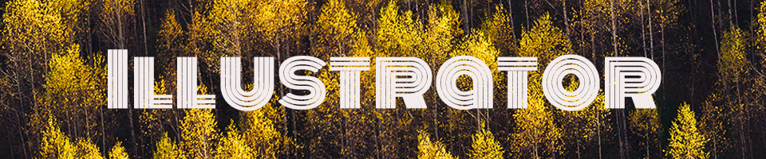

For this particular vector project, I was listening to a lot of jazz music at the time. So I was very much inspired to create a portrait of John Coltrane, who is one of the greatest to ever play the Saxophone. I had a bit of difficulty illustrating a creative background and deciding on what to initially add. I decided to keep it simplistic with just a few soft colors as I also wanted his name to be titled vertically down the page.